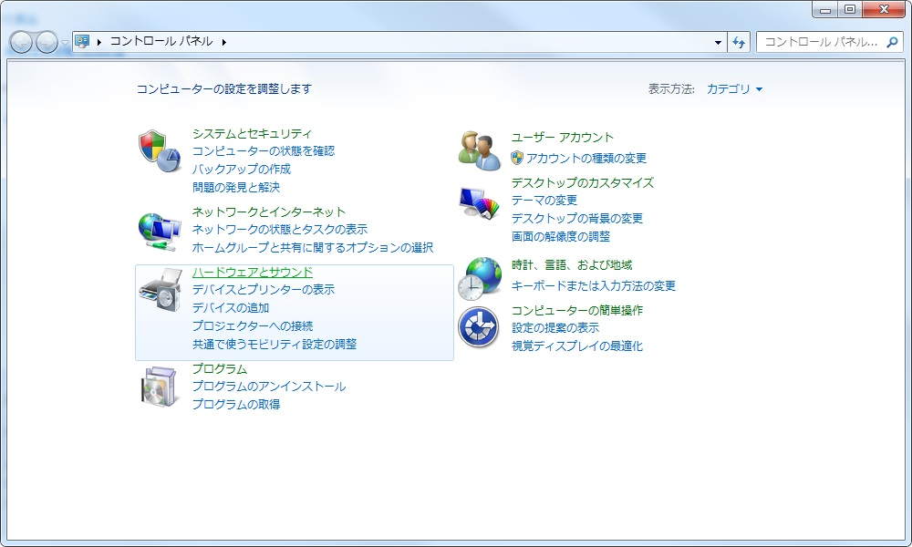
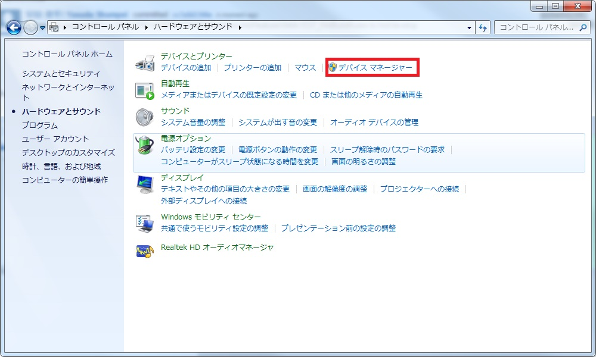
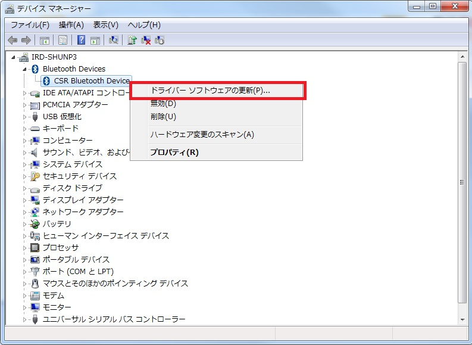
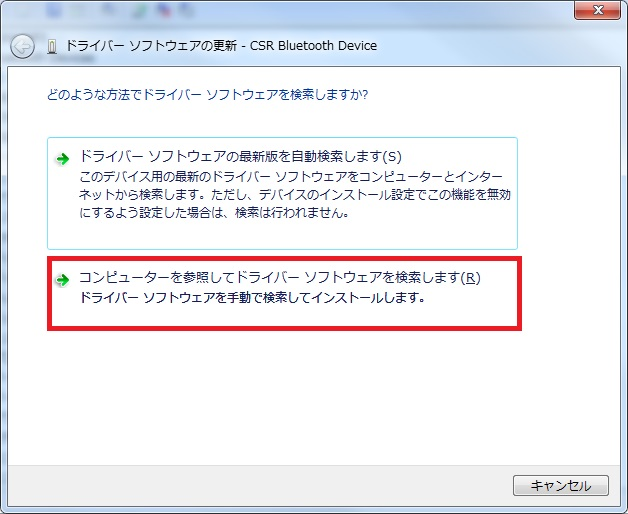
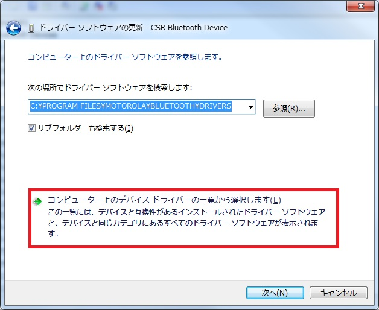
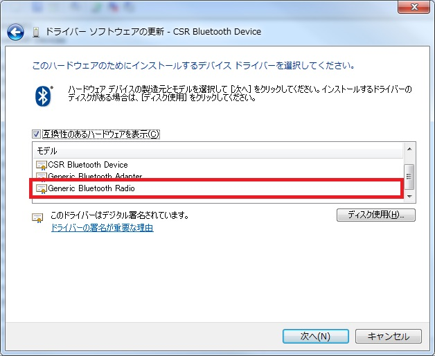
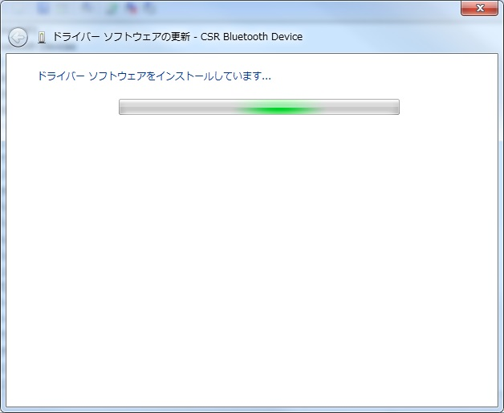
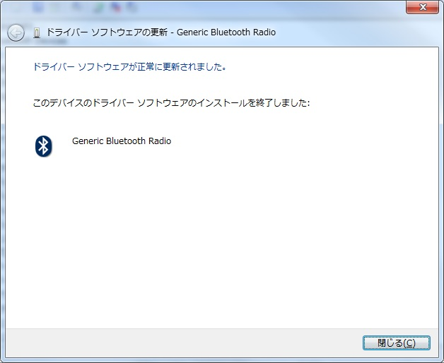

概要
コントローラーを PC 環境に Bluetooth で接続して使用するためには、Microsoft の Bluetooth のドライバーソフトウェア を使用する必要があります。
市販の Bluetooth ドングルを Windows7 環境で利用する場合、他社製の Bluetooth ドライバーソフトウェアがデフォルトでインストールされるため、変更する必要があります。
※ Windows8.1 / Windows10 環境では Microsoft のBluetooth ドライバーソフトウェアが自動的に使用されるため本手順は不要です。
Windows7 環境で Bluetooth のドライバーソフトウェアを切り替える方法
- コントロールパネルを開きます。「ハードウェアとサウンド」を開きます。

- 「デバイスマネージャー」を開きます。

- Bluetooth Devicesの中かPCに接続されているデバイスを右クリックで選択し、「ドライバーソフトウェアの更新(P)...」を選択します。

- 「コンピューターを参照してドライバーソフトウェアを検索します(R)」を選択します

- 「コンピューター上のデバイスドライバ―の一覧から選択します(L)」を選択します。

- 「互換性のあるハードウェアを表示」にチェックが入っていることを確認し、モデルの一覧の中から「Generic Bluetooth Radio」を選択し、「次へ」をクリックします。

- ドライバーソフトウェアのインストールが開始します。

- 下記の画面で Bluetooth のドライバーソフトウェア切り替えが完了しました。「閉じる」で終了します。
